This week, our task was to redraw and produce the echo hello-world circuit board, adding a button and a LED to it. Knowing little about electronics and having never used Eagle before, I was bracing myself for a long circuit design nightmare.
To get a gist of the software, I started by watching this video tutorial.
And then I watched this one to better understand how the schematic design works.
During the whole board design process, I kept checking providence tutorials, they proved quite useful.
I downloaded the fab library and picked out the components to place on the schematic board. Then I routed the components and adjusted the components' positions on the layout board.
Once everything seemed to be in the right place, I checked Eagle's Design Rules (under DRC in the Tools Menu), to see if there were any warnings or errors. And helas, there were quite a few overlaps and improperly connected routes. It took a little more editing before my board was compliant with the rules, but I finally succeeded.
Here are the schematic and layout views of the board:
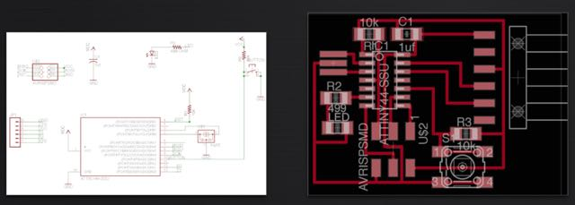I then exported the board layout as a .png, and edited in Gimp to add the outline traces. I also exported an image of the pads alone, so I could use it as a stencil to evenly apply soldering paste on the board.
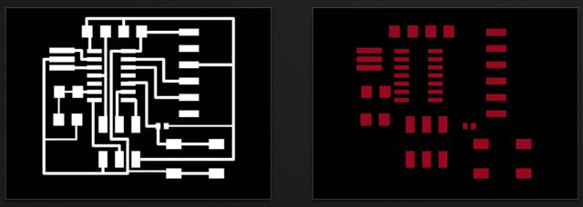PCB AND STENCIL MAKING
I uploaded my circuit's .png image into the fabmodules, so I could cut out my copper board in the Modela. I followed the same steps from the Electronics Production week and the process was fast and painless. 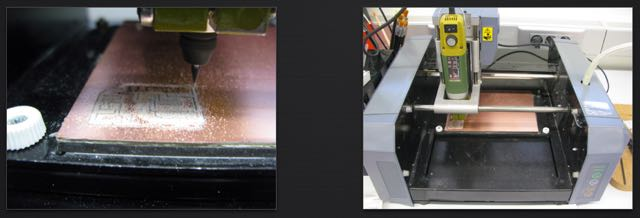After cleaning up the board (soap, water, steelwool), I noticed the mill bit had "eaten" quite a deep path between my traces. This is not ideal when you are using stencils -- you want you surface to be as flat and even as possible, so that the solder paste doesn't bleed underneath.
Cutting out the board's pads in the Roland vinyl cutter was a very simple operation: I turned my Eagle image into a vector in Inkscape (you can even do the tracing directly in CUTSTUDIO, the not-so-great-software that comes with the machine), took a small leftover piece of vinyl and the machine took care of the rest in just a couple of minutes.
This is how the vinyl mask looked, after being glued on to the circuit board
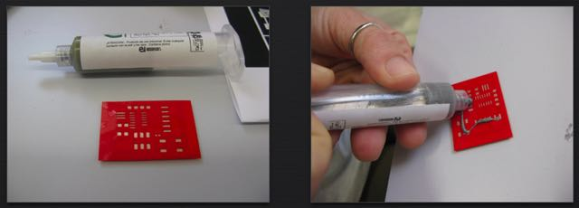SOLDERING PASTE
I then started applying the solder paste onto the mask. I'm not convinced I chose the most effective method to spread it out evenly among the pads; instead of applying bits and pieces directly on the holes, I think it works best if one applies a thick line of paste on of the the board's edges and then spreads it back and forth until all the pad holes are filled.
Here's a closer look at the process:
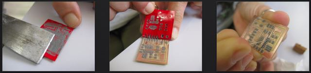As I removed the mask, most of the solder paste was right on the pads; but the smaller Attiny44 pads were somewhat flooded in paste, so I cleaned up the paths between them with an exacto knife and a needle.
ADDING THE COMPONENTS
Once the excess solder paste was removed, it was time to lay out the components on the pasted pads. I started by printing out a big-sized image of my board layout; this was to serve as a "bingo board" on which I could place the components, as I was picking them out of the fabinventory. This helped me keep track of all the micro parts.
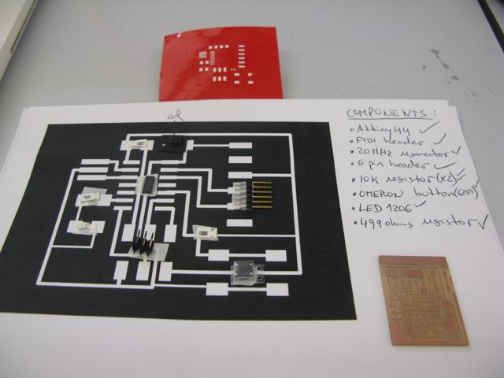Once all the components were on the board, I was ready for the heat gun!
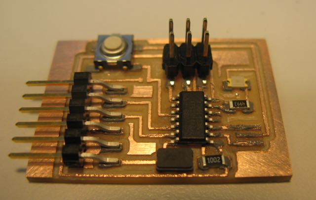Working the heatgun (set to 340ºC) slolwly around the board and watchin the solder paste turn into a nice shinny metal was actually quite entertaining. I pointed the gun diretly at the individual pads I was looking to solder (at a distance of about 2-5cms) and kept making sure I was not overheating the cirtcuit -- and risk frying some of the components.
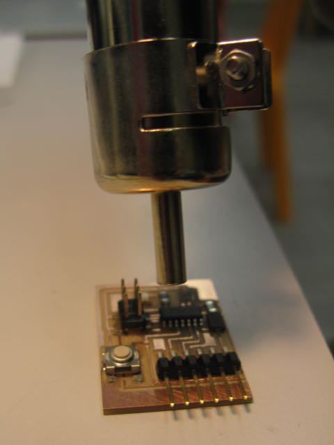This is how the board looked after going through the heating process:
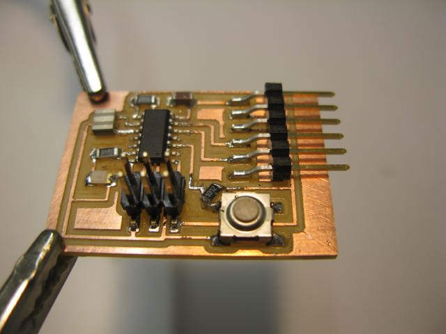CONNECTING THE CIRCUIT
After checking all the connections on the board with the voltmeter, I connected it to the ISP and to the FTDI cable. To make sure the connecting cables were all in the "right position", I used the voltmeter to look for the ground pins on both the Attiny and the FTDI header and this helped me align them.
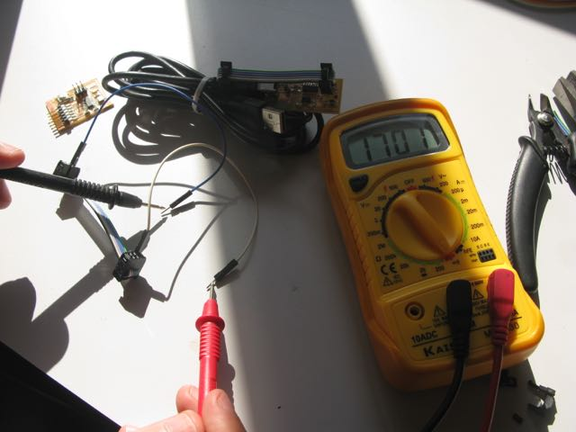This is the look of the helloecho board, once connected to the ISP and the FTDI cable.
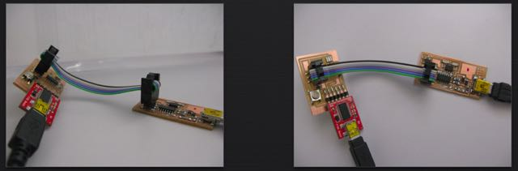I didn't have enough time to start programming my board this week, so I'm still waiting to say hello to the world...
Here are the board's Eagle files:
hello echo board